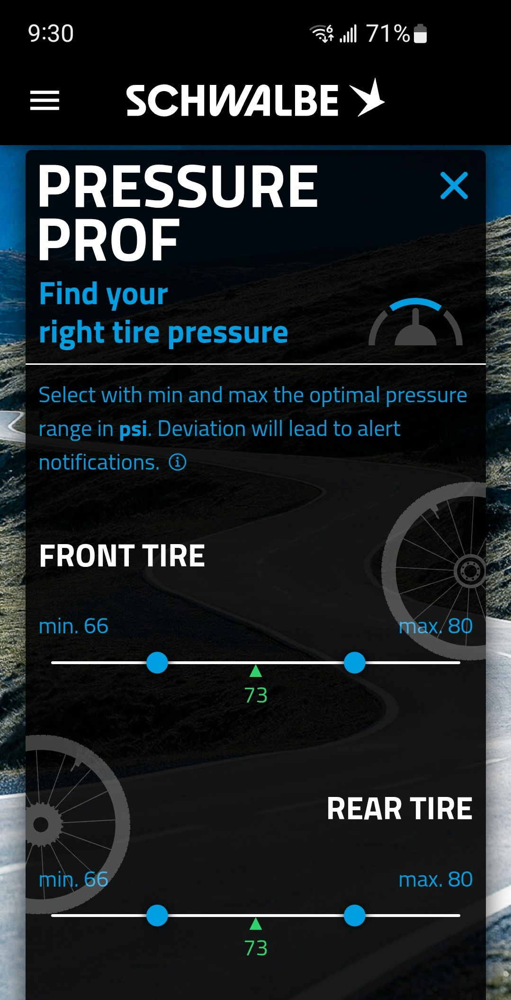

Schwalbe
AIRMAX Smart Tire Sensor
TubeWitch supports the Schwalbe AIRMAX Smart Tire Sensor for live tire pressure on Garmin.
Schwalbe AIRMAX on Garmin
TubeWitch for TyreWiz & AIRMAX is a FREE Garmin Connect IQ data field for riders who want live tire pressure from Schwalbe AIRMAX sensors on a Garmin Edge device or compatible watch.
AIRMAX is Schwalbe's valve-mounted smart tire pressure sensor for tube and tubeless setups. Use the Schwalbe app for sensor-specific setup, then use TubeWitch to bring AIRMAX pressure data, alerts, layouts, and activity stats to Garmin.

This page is for riders searching for Schwalbe AIRMAX Garmin support or a Garmin data field for AIRMAX tire pressure.
Schwalbe
TubeWitch supports the Schwalbe AIRMAX Smart Tire Sensor for live tire pressure on Garmin.
Setup
Use the Schwalbe app for AIRMAX sensor-specific setup and pressure guidance.
Garmin
TubeWitch supports Garmin Edge devices and Garmin watches, with layout and alert behavior tuned to the device.
TubeWitch
Use customizable labels, colors, layouts, timeouts, alerts, and activity recording.
Show AIRMAX pressure directly on the ride screen instead of checking a mobile app.
Popup, tone, vibration, delay, and reset controls help avoid nuisance duplicate alarms.
Store up to five named sensor sets and switch manually, by touch, or through Auto behavior.
Record pressure from the active set and review average pressures and set names in Garmin Connect IQ stats.
TubeWitch is built for riders who want tire pressure visible on Garmin during the ride. It adds Garmin layouts, pressure alerts, stale-data indicators, multiple sensor sets, and activity stats around compatible tire pressure sensors such as Schwalbe AIRMAX.
How it works
 leave the TubeWitch field visible, and rotate your wheels.
leave the TubeWitch field visible, and rotate your wheels.
Yes. TubeWitch supports the Schwalbe AIRMAX Smart Tire Sensor.
Yes. Use the Schwalbe app for AIRMAX sensor-specific setup. Use TubeWitch for Garmin display, alerts, and activity data.
Yes. TubeWitch supports Garmin Edge devices and Garmin watches.
Yes. TubeWitch can record pressure from the active sensor set, alarms, and related status.
Need a Garmin data field for Schwalbe AIRMAX tire pressure? Start with the Garmin App Store listing, then use the setup guide, FAQ, and alert guide to finish configuration.